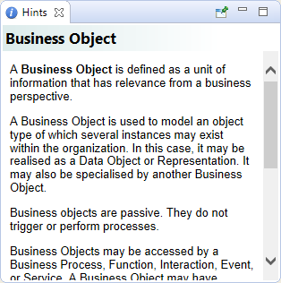

The Hints window shows a hint for the selected object or palette entry. It can be useful to provide basic information about the purpose of the concepts and viewpoints in a model.
The selected hint can be pinned by selecting the pin button in the Hints window.
The Hints Window